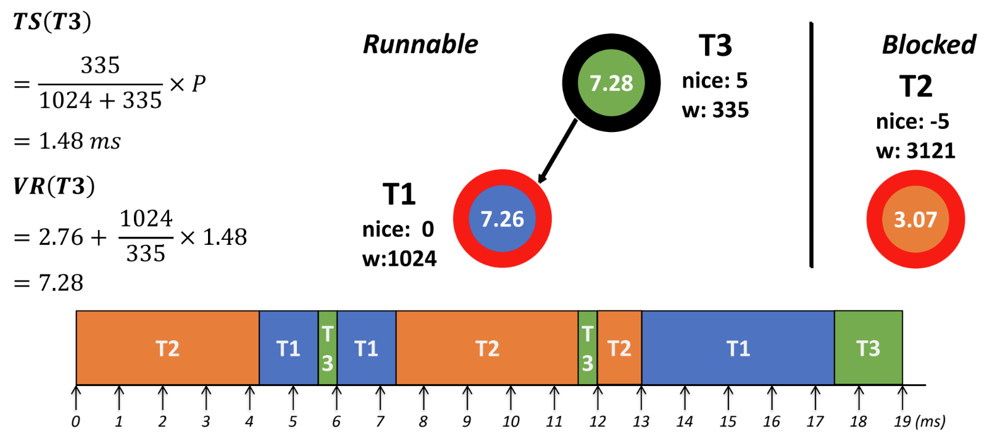

<!DOCTYPE html>
<html><head><title>16. CPU Scheduling (서울대 고급 운영체제 강의록)</title><meta charSet="utf-8"/><meta name="viewport" content="width=device-width, initial-scale=1.0"/><meta property="og:title" content="16. CPU Scheduling (서울대 고급 운영체제 강의록)"/><meta property="og:description" content="서울대학교 컴퓨터공학과 김진수 교수님의 &amp;quot;고급 운영체제&amp;quot; 강의를 필기한 내용입니다. 다소 잘못된 내용과 구어적 표현 이 포함되어 있을 수 있습니다. CPU Scheduling § 매 cpu time 은 매우 짧기 때문에, 그 짧은 시간동인 효율적으로 process 를 돌리기 위한 방법이 필요하다."/><meta property="og:image" content="https://mdg.haeramk.im/static/og-image.png"/><meta property="og:width" content="1200"/><meta property="og:height" content="675"/><link rel="icon" href="../../../../../static/icon.png"/><meta name="description" content="서울대학교 컴퓨터공학과 김진수 교수님의 &amp;quot;고급 운영체제&amp;quot; 강의를 필기한 내용입니다. 다소 잘못된 내용과 구어적 표현 이 포함되어 있을 수 있습니다. CPU Scheduling § 매 cpu time 은 매우 짧기 때문에, 그 짧은 시간동인 효율적으로 process 를 돌리기 위한 방법이 필요하다."/><meta name="generator" content="Quartz"/><link rel="preconnect" href="https://fonts.googleapis.com"/><link rel="preconnect" href="https://fonts.gstatic.com"/><link href="../../../../../index.css" rel="stylesheet" type="text/css" spa-preserve/><link href="https://cdn.jsdelivr.net/npm/katex@0.16.0/dist/katex.min.css" rel="stylesheet" type="text/css" spa-preserve/><link href="https://fonts.googleapis.com/css2?family=IBM Plex Mono&amp;family=Gowun Batang:wght@400;700&amp;family=Gowun Dodum:ital,wght@0,400;0,600;1,400;1,600&amp;display=swap" rel="stylesheet" type="text/css" spa-preserve/><script src="../../../../../prescript.js" type="application/javascript" spa-preserve></script><script type="application/javascript" spa-preserve>const fetchData = fetch(`../../../../../static/contentIndex.json`).then(data => data.json())</script></head><body data-slug="gardens/os/originals/aos.spring.2024.cse.snu.ac.kr/lectures/16.-CPU-Scheduling"><div id="quartz-root" class="page"><div id="quartz-body"><div class="left sidebar"><h1 class="page-title "><a href="../../../../..">Madison Digital Garden</a></h1><div class="spacer mobile-only"></div><div class="search "><div id="search-icon"><p>Search</p><div></div><svg tabIndex="0" aria-labelledby="title desc" role="img" xmlns="http://www.w3.org/2000/svg" viewBox="0 0 19.9 19.7"><title id="title">Search</title><desc id="desc">Search</desc><g class="search-path" fill="none"><path stroke-linecap="square" d="M18.5 18.3l-5.4-5.4"></path><circle cx="8" cy="8" r="7"></circle></g></svg></div><div id="search-container"><div id="search-space"><input autocomplete="off" id="search-bar" name="search" type="text" aria-label="Search for something" placeholder="Search for something"/><div id="results-container"></div></div></div></div><div class="darkmode "><input class="toggle" id="darkmode-toggle" type="checkbox" tabIndex="-1"/><label id="toggle-label-light" for="darkmode-toggle" tabIndex="-1"><svg xmlns="http://www.w3.org/2000/svg" xmlnsXlink="http://www.w3.org/1999/xlink" version="1.1" id="dayIcon" x="0px" y="0px" viewBox="0 0 35 35" style="enable-background:new 0 0 35 35;" xmlSpace="preserve"><title>Light mode</title><path d="M6,17.5C6,16.672,5.328,16,4.5,16h-3C0.672,16,0,16.672,0,17.5    S0.672,19,1.5,19h3C5.328,19,6,18.328,6,17.5z M7.5,26c-0.414,0-0.789,0.168-1.061,0.439l-2,2C4.168,28.711,4,29.086,4,29.5    C4,30.328,4.671,31,5.5,31c0.414,0,0.789-0.168,1.06-0.44l2-2C8.832,28.289,9,27.914,9,27.5C9,26.672,8.329,26,7.5,26z M17.5,6    C18.329,6,19,5.328,19,4.5v-3C19,0.672,18.329,0,17.5,0S16,0.672,16,1.5v3C16,5.328,16.671,6,17.5,6z M27.5,9    c0.414,0,0.789-0.168,1.06-0.439l2-2C30.832,6.289,31,5.914,31,5.5C31,4.672,30.329,4,29.5,4c-0.414,0-0.789,0.168-1.061,0.44    l-2,2C26.168,6.711,26,7.086,26,7.5C26,8.328,26.671,9,27.5,9z M6.439,8.561C6.711,8.832,7.086,9,7.5,9C8.328,9,9,8.328,9,7.5    c0-0.414-0.168-0.789-0.439-1.061l-2-2C6.289,4.168,5.914,4,5.5,4C4.672,4,4,4.672,4,5.5c0,0.414,0.168,0.789,0.439,1.06    L6.439,8.561z M33.5,16h-3c-0.828,0-1.5,0.672-1.5,1.5s0.672,1.5,1.5,1.5h3c0.828,0,1.5-0.672,1.5-1.5S34.328,16,33.5,16z     M28.561,26.439C28.289,26.168,27.914,26,27.5,26c-0.828,0-1.5,0.672-1.5,1.5c0,0.414,0.168,0.789,0.439,1.06l2,2    C28.711,30.832,29.086,31,29.5,31c0.828,0,1.5-0.672,1.5-1.5c0-0.414-0.168-0.789-0.439-1.061L28.561,26.439z M17.5,29    c-0.829,0-1.5,0.672-1.5,1.5v3c0,0.828,0.671,1.5,1.5,1.5s1.5-0.672,1.5-1.5v-3C19,29.672,18.329,29,17.5,29z M17.5,7    C11.71,7,7,11.71,7,17.5S11.71,28,17.5,28S28,23.29,28,17.5S23.29,7,17.5,7z M17.5,25c-4.136,0-7.5-3.364-7.5-7.5    c0-4.136,3.364-7.5,7.5-7.5c4.136,0,7.5,3.364,7.5,7.5C25,21.636,21.636,25,17.5,25z"></path></svg></label><label id="toggle-label-dark" for="darkmode-toggle" tabIndex="-1"><svg xmlns="http://www.w3.org/2000/svg" xmlnsXlink="http://www.w3.org/1999/xlink" version="1.1" id="nightIcon" x="0px" y="0px" viewBox="0 0 100 100" style="enable-background='new 0 0 100 100'" xmlSpace="preserve"><title>Dark mode</title><path d="M96.76,66.458c-0.853-0.852-2.15-1.064-3.23-0.534c-6.063,2.991-12.858,4.571-19.655,4.571  C62.022,70.495,50.88,65.88,42.5,57.5C29.043,44.043,25.658,23.536,34.076,6.47c0.532-1.08,0.318-2.379-0.534-3.23  c-0.851-0.852-2.15-1.064-3.23-0.534c-4.918,2.427-9.375,5.619-13.246,9.491c-9.447,9.447-14.65,22.008-14.65,35.369  c0,13.36,5.203,25.921,14.65,35.368s22.008,14.65,35.368,14.65c13.361,0,25.921-5.203,35.369-14.65  c3.872-3.871,7.064-8.328,9.491-13.246C97.826,68.608,97.611,67.309,96.76,66.458z"></path></svg></label></div></div><div class="center"><div class="page-header"><div class="popover-hint"><h1 class="article-title ">16. CPU Scheduling (서울대 고급 운영체제 강의록)</h1><p class="content-meta ">May 02, 2024, 19 min read</p><ul class="tags "><li><a href="../../../../../tags/originals" class="internal tag-link">#originals</a></li><li><a href="../../../../../tags/snu-aos24s" class="internal tag-link">#snu-aos24s</a></li><li><a href="../../../../../tags/os" class="internal tag-link">#os</a></li></ul></div></div><article class="popover-hint"><blockquote class="callout" data-callout="info">
<div class="callout-title">
                  <div class="callout-icon"><svg xmlns="http://www.w3.org/2000/svg" width="100%" height="100%" viewBox="0 0 24 24" fill="none" stroke="currentColor" stroke-width="2" stroke-linecap="round" stroke-linejoin="round"><circle cx="12" cy="12" r="10"></circle><line x1="12" y1="16" x2="12" y2="12"></line><line x1="12" y1="8" x2="12.01" y2="8"></line></svg></div>
                  <div class="callout-title-inner"><p>서울대학교 컴퓨터공학과 김진수 교수님의 &quot;고급 운영체제&quot; 강의를 필기한 내용입니다. </p></div>
                  
                </div>
</blockquote>
<blockquote class="callout" data-callout="warning">
<div class="callout-title">
                  <div class="callout-icon"><svg xmlns="http://www.w3.org/2000/svg" width="100%" height="100%" viewBox="0 0 24 24" fill="none" stroke="currentColor" stroke-width="2" stroke-linecap="round" stroke-linejoin="round"><path d="m21.73 18-8-14a2 2 0 0 0-3.48 0l-8 14A2 2 0 0 0 4 21h16a2 2 0 0 0 1.73-3Z"></path><line x1="12" y1="9" x2="12" y2="13"></line><line x1="12" y1="17" x2="12.01" y2="17"></line></svg></div>
                  <div class="callout-title-inner"><p>다소 잘못된 내용과 구어적 표현 이 포함되어 있을 수 있습니다. </p></div>
                  
                </div>
</blockquote>
<h2 id="cpu-scheduling">CPU Scheduling<a aria-hidden="true" tabindex="-1" href="#cpu-scheduling" class="internal"> §</a></h2>
<ul>
<li>매 cpu time 은 매우 짧기 때문에, 그 짧은 시간동인 효율적으로 process 를 돌리기 위한 방법이 필요하다.</li>
<li>Mechanism: <span class="text-highlight">어떻게</span> 전환할까? 등</li>
<li>Policy: <span class="text-highlight">누구를</span> 선택할거냐?, <span class="text-highlight">언제</span> 전환할까? 등</li>
</ul>
<h2 id="preemptive-내쫒는게-가능하냐">Preemptive: 내쫒는게 가능하냐<a aria-hidden="true" tabindex="-1" href="#preemptive-내쫒는게-가능하냐" class="internal"> §</a></h2>
<ul>
<li><em>Non-preemptive policy</em> 의 경우에는 cpu 를 스스로 내려놓 (<code>yield</code> syscall) 기 전까지는 계속 이놈이 사용한다.
<ul>
<li>임베디드에서 이런 policy 를 사용하기도 한다.</li>
<li>이때는 각 task 들이 cooperate 해서 서로서로 잘 양보할 수 있게 한다.</li>
</ul>
</li>
<li><em>Preemptive policy</em> 의 경우에는 synchronize 라는 비용을 지불해야 한다.
<ul>
<li>Concurrency 나 deadlock 이 발생하는 요인중에 하나는 이 preemption 이기에, preemption 을 하게 되면 자연스레 synchronize 를 고려하게 된다.</li>
<li>하지만 결국에는 general purpose 로 가면 이들을 모두 cooperate 하는 것이 어렵기 때문에 어쩔 수 없이 대부분의 OS 가 채택한다.</li>
<li>참고로, kernel mode 에서도 preemption 이 가능하다. (아마 interrupt handler)</li>
</ul>
</li>
</ul>
<h2 id="work-conserving">Work-conserving<a aria-hidden="true" tabindex="-1" href="#work-conserving" class="internal"> §</a></h2>
<ul>
<li><em>Work-conserving policy</em> 는 CPU 가 노는 꼬라지를 보지 않게 하는 정책이고, 많은 OS 에서 흔하게 채택한다.
<ul>
<li>정확하게 말하면 리소스를 누군가 사용하고자 하는데도 해당 리소스를 idle 하게 두진 않겠다는 의미이다.</li>
</ul>
</li>
<li><em>Non-work conserving policy</em> 의 경우에는
<ul>
<li>특정 cpu 가 특정 task 를 전담해서 해당 task 가 없으면 놀게 되는 예시</li>
<li>IO scheduler 의 경우에는 좀만 기다리면 인접한 section 에 대한 요청이 올테니까 멀리있는 section 에 대한 요청은 잠시 보류하는 <em>Anticipatory I/O Scheduler</em> 가 있다</li>
<li>Multi core 의 경우에는 각 core 에 run queue 가 있고 여기에 process 가 고르게 들어가면 좋겠지만 실제로는 그것이 쉽지 않아 결국에는 일부 core 에 몰릴 수 있게 된다.
<ul>
<li>즉 이 경우에는 의도치 않게 non work conserving 비스무리하게 돌아가게 되는것</li>
</ul>
</li>
</ul>
</li>
</ul>
<h2 id="priority-scheduling">Priority Scheduling<a aria-hidden="true" tabindex="-1" href="#priority-scheduling" class="internal"> §</a></h2>
<ul>
<li>Static 은 priority 가 안바뀌는 것, dynamic 은 상황에 따라 바뀌는 것</li>
<li>Static 하게 우선순위를 줄 수 있지만 이 경우에는 starvation 이 걸릴 수 있기 때문에
<ul>
<li>즉, 높은 우선순위의 task 가 계속 들오면 낮은 우선순위는 손가락만 빨다가 아사할 수 있게 되는 것.</li>
<li>참고로, static priority 의 경우에 같은 우선순위들에 대해서는 그냥 FIFO 나 RR 등을 사용하게 된다.</li>
</ul>
</li>
<li>현대의 대부분 OS 는 (1) <em>Preemptive</em>, (2) <em>Dynamic priority</em> scheduling 을 기본적으로 채택한다.</li>
<li>흔히 사용되는 mechanism 은 <a href="../../../../../gardens/os/originals/os.spring.2021.cse.cnu.ac.kr/10.-CPU-Scheduling#feedback-scheduling-multi-level-feedback-queue" class="internal" data-slug="gardens/os/originals/os.spring.2021.cse.cnu.ac.kr/10.-CPU-Scheduling">Multi Level Feedback Queue</a> 이다.</li>
<li>대부분의 OS 들은 모두 dynamic 이지만
<ul>
<li>Priority 를 얼마나 올리고</li>
<li>Time slice 를 얼마로 잡을것인지 등의 차이가 있다.</li>
</ul>
</li>
<li>User interactive 한 process (화면 터치 등) 은 priority 가 높게 설정 된다고 한다.</li>
<li>그리고 일반적으로는 priority 가 높으면 time slice 도 길다.
<ul>
<li>경향성이지 무조건 그렇다는 것은 아니다; 이전의 windows 의 경우에는 저 둘을 independent 하게 관리했다고 한다.</li>
</ul>
</li>
<li>지금의 linux 에는 <em>Completely Fair Scheduling</em> (<em>CFS</em>) 를 사용한다.
<ul>
<li>ingo 라는 아저씨가 제안 (사실은 뺏어온) 했다고 한다</li>
</ul>
</li>
<li>Scheduling class: 이것은 Linux 의 workload type 들을 classify 해놓은 것이라 생각하면 된다.
<ul>
<li>아래 보이는 것처럼 scheduling class 별로 우선순위와 정책이 있다.</li>
</ul>
</li>
</ul>


<table><thead><tr><th>CLASS</th><th>DESC</th><th>POLICY</th></tr></thead><tbody><tr><td>DL</td><td>real-time w/ deadline - 우선순위가 제일 높음</td><td><code>SCHED_DEADLINE</code></td></tr><tr><td>RT</td><td>real time</td><td><code>SCHED_FIFO</code>, <code>SCHED_RR</code></td></tr><tr><td>Fair</td><td>일반 time sharing process</td><td><code>SCHED_NORMAL</code>, <code>SCHED_BATCH</code></td></tr><tr><td>Idle</td><td>우선순위가 제일 낮고, 일반적으로 엄청나게 많은 연산을 필요로 하는</td><td><code>SCHED_IDLE</code></td></tr></tbody></table>
<h2 id="linux-v24-epoch-based-scheduler">Linux v2.4: Epoch-based Scheduler<a aria-hidden="true" tabindex="-1" href="#linux-v24-epoch-based-scheduler" class="internal"> §</a></h2>
<h3 id="terminology">Terminology<a aria-hidden="true" tabindex="-1" href="#terminology" class="internal"> §</a></h3>
<h4 id="nice">NICE<a aria-hidden="true" tabindex="-1" href="#nice" class="internal"> §</a></h4>
<ul>
<li>Base static priority 로 <em>NICE</em> 를 사용
<ul>
<li><em>Base-static</em> 의 의미는 우선순위 계산에 static 하게 반영되는 값이라는 소리다.</li>
<li>낮은 숫자가 더 좋은거다.</li>
<li>Superuser 만 숫자를 낮출 수 있고 일반 유저는 높일수만 있다</li>
</ul>
</li>
</ul>
<h4 id="time-slice-tick-counter">Time slice (Tick, Counter)<a aria-hidden="true" tabindex="-1" href="#time-slice-tick-counter" class="internal"> §</a></h4>
<ul>
<li>NICE 에 따라서 <em>tick</em> 이라는 식권을 받아 해당 tick 만큼 cpu 를 잡고 쓸 수 있게 된다고 이해하면 된다.
<ul>
<li>Tick 은 시간단위이고, x86 의 경우에는 100Hz = 10ms 이다.</li>
</ul>
</li>
<li>NICE 에 따라 tick 을 계산하는 공식은 아래와 같더라.
<ul>
<li>뭐 여기에는 편의상 <span class="math math-inline"><span class="katex"><span class="katex-html" aria-hidden="true"><span class="base"><span class="strut" style="height:1em;vertical-align:-0.25em;"></span><span class="mord">/4</span></span></span></span></span> 로 적었는데, 원래는 bitwise operation <code>>> 2</code> 이다.</li>
</ul>
</li>
</ul>
<div class="math math-display"><span class="katex-display"><span class="katex"><span class="katex-html" aria-hidden="true"><span class="base"><span class="strut" style="height:0.6944em;"></span><span class="mord mathnormal" style="margin-right:0.13889em;">T</span><span class="mord mathnormal">i</span><span class="mord mathnormal">c</span><span class="mord mathnormal" style="margin-right:0.03148em;">k</span><span class="mspace" style="margin-right:0.2778em;"></span><span class="mrel">=</span><span class="mspace" style="margin-right:0.2778em;"></span></span><span class="base"><span class="strut" style="height:1em;vertical-align:-0.25em;"></span><span class="mopen">(</span><span class="mord">20</span><span class="mspace" style="margin-right:0.2222em;"></span><span class="mbin">−</span><span class="mspace" style="margin-right:0.2222em;"></span></span><span class="base"><span class="strut" style="height:1em;vertical-align:-0.25em;"></span><span class="mord mathnormal" style="margin-right:0.10903em;">N</span><span class="mord mathnormal" style="margin-right:0.07847em;">I</span><span class="mord mathnormal" style="margin-right:0.05764em;">CE</span><span class="mclose">)</span><span class="mord">/4</span><span class="mspace" style="margin-right:0.2222em;"></span><span class="mbin">+</span><span class="mspace" style="margin-right:0.2222em;"></span></span><span class="base"><span class="strut" style="height:0.6444em;"></span><span class="mord">1</span></span></span></span></span></div>
<ul>
<li>위 공식으로 계산해보면
<ul>
<li>default nice 인 0 의 경우에는 6tick 을 받고</li>
<li>lowest 인 20 는 1tick 을 받고</li>
<li>highest 인 19 는10tick 을 받음</li>
</ul>
</li>
</ul>
<h4 id="epoch">Epoch<a aria-hidden="true" tabindex="-1" href="#epoch" class="internal"> §</a></h4>
<ul>
<li><em>Epoch</em> 은 권투의 라운드라고 생각하면 된다.</li>
<li>우선 epoch 이 시작되면, 각 task 들은 NICE 에 따라 tick 을 분배받고, NICE 우선순위로 해당 tick 만큼 실행된다.
<ul>
<li>Tick 을 모두 소진하면 runnable task 에서 제외되고, 다음 epoch 에 다시 실행된다.</li>
<li>IO 같은 이유로 block 되면 마찬가지로 runnable task 에서 제외되고, ready 상태로 바뀔 때 까지 제외된 상태로 있는다.</li>
</ul>
</li>
<li>그리고 runnable task 가 더이상 없으면, epoch 이 종료되고 새로운 epoch 이 시작되며 위 과정이 반복된다.
<ul>
<li>만약 해당 epoch 동안 tick 을 다 못썼으면 다음 epoch 에는 남은 tick 의 절반만 인정해준다.</li>
<li>따라서 tick 을 안쓰고 끝까지 버텨도 (등비수열 극한 계산 해보면) 처음 tick 의 두배는 넘지 못한다고 한다.</li>
</ul>
</li>
</ul>
<h4 id="goodness">Goodness<a aria-hidden="true" tabindex="-1" href="#goodness" class="internal"> §</a></h4>
<ul>
<li><em>Goodness</em> 는 다음 실행할 task 를 결정하는 계산된 우선순위값인데, 높을수록 우선순위가 높다.</li>
<li>대략 다음처럼 계산된다.
<ul>
<li><code>0</code> 이면 더이상 실행될 수 없음 (tick 없음)</li>
<li><code>1000</code> 이상이면 real-time 우선순위임.</li>
<li>그 사이면 일반 time-slice task 들의 우선순위인데
<ul>
<li><span class="math math-inline"><span class="katex"><span class="katex-html" aria-hidden="true"><span class="base"><span class="strut" style="height:0.7778em;vertical-align:-0.0833em;"></span><span class="mord mathnormal" style="margin-right:0.13889em;">T</span><span class="mord mathnormal">i</span><span class="mord mathnormal">c</span><span class="mord mathnormal" style="margin-right:0.03148em;">k</span><span class="mspace" style="margin-right:0.2222em;"></span><span class="mbin">−</span><span class="mspace" style="margin-right:0.2222em;"></span></span><span class="base"><span class="strut" style="height:0.7667em;vertical-align:-0.0833em;"></span><span class="mord mathnormal" style="margin-right:0.10903em;">N</span><span class="mord mathnormal" style="margin-right:0.07847em;">I</span><span class="mord mathnormal" style="margin-right:0.05764em;">CE</span><span class="mspace" style="margin-right:0.2222em;"></span><span class="mbin">+</span><span class="mspace" style="margin-right:0.2222em;"></span></span><span class="base"><span class="strut" style="height:0.6444em;"></span><span class="mord">20</span></span></span></span></span> (혹은 조건에 따라 21) 정도로 계산된다.</li>
<li>즉, 남아있는 tick 이 높을수록, NICE 는 적을수록 높은 goodness 를 가지게 되는 것.</li>
</ul>
</li>
</ul>
</li>
</ul>
<h3 id="v24--v26-on-scheduler">v2.4 ~ v2.6: O(N) scheduler<a aria-hidden="true" tabindex="-1" href="#v24--v26-on-scheduler" class="internal"> §</a></h3>
<ul>
<li>Linux 2.4 ~ 2.6 까지 쓰이던 scheduler 를 <em>O(N) scheduler</em> 라고 하고 기본 원리는 위와 같지만</li>
<li>Epoch 시작때 tick 분배도 선형적으로 하고</li>
<li>Next process 를 정할 때에도 run queue 를 쭉 돌며 goodness 를 계산하고 goodness 가 가장 높은놈을 실행한다</li>
<li>하지만 이것은 너무 느리다
<ul>
<li>이름부터가 <em>O(N) scheduler</em> 이다.</li>
<li>어떤 workload 의 경우에는 전체 시간동안 거의 절반에 가까운 시간을 scheduler 가 먹었다고 한다</li>
</ul>
</li>
<li>그리고 이때 tick 을 가지고 있는 task 가 너무 많아서 epoch 이 안끝나는 문제도 있었다고 한다</li>
</ul>
<h3 id="v26--v2623-o1-scheduler">v2.6 ~ v2.6.23: O(1) scheduler<a aria-hidden="true" tabindex="-1" href="#v26--v2623-o1-scheduler" class="internal"> §</a></h3>
<ul>
<li>위의 O(N) 와 기본 원리는 같지만,
<ul>
<li>Epoch 이 시작될때마다 tick 을 주는 것이 아닌 epoch 중간중간 tick 을 나눠주고</li>
<li>우선순위 level (Goodness 랑 똑같은 건지는 모르겠음) 에 따라 run queue 를 둬서 모든 task 를 풀스캔하지 않도록 했다더라</li>
<li>그 외에 비트맵이나 다른 array 를 더 사용해서 O(N) scheduler 를 최적화한 버전.</li>
</ul>
</li>
</ul>
<h2 id="linux-latest-completely-fair-scheduler-cfs">Linux-latest: Completely Fair Scheduler (CFS)<a aria-hidden="true" tabindex="-1" href="#linux-latest-completely-fair-scheduler-cfs" class="internal"> §</a></h2>
<ul>
<li>간단하게 요약해보면
<ul>
<li>Priority 로 weight 를 구한 다음 한 interval 안에서 task 들이 cpu time 을 나눠 가지는 것이 CFS 의 코어이다.</li>
<li>각 task 들은 CPU time 을 얼마나 할당받을 것이냐: 전체 task 들의 weight 총합에서 내 weight 가 차지하는 비중으로 cpu time 을 받음
<ul>
<li>즉, weight 별로 time 을 나눠가지는 <em>Proportional Share Scheduling</em> 정책</li>
</ul>
</li>
<li>Task 들을 어떤 순서로 실행할 것이냐: weight 가 크고 지금까지 실행한 cpu time 이 적은 task 에게 배정</li>
</ul>
</li>
</ul>
<h3 id="priority-to-weight">Priority to Weight<a aria-hidden="true" tabindex="-1" href="#priority-to-weight" class="internal"> §</a></h3>
<ul>
<li>priority 를 0 ~ 139 (140개) 으로 지정
<ul>
<li>NICE -20 ~ 19 가 100 ~ 139 에 매핑됨</li>
<li>100 아래는 real time 관련된 놈이 사용됨</li>
<li>Default 는 NICE 0 (priority 120) 으로 동일하다</li>
</ul>
</li>
<li>weight 과 priority 는 개념적인 연관은 없다
<ul>
<li>개념적으로는 weight 은 cpu proportion 이고, priority 는 cpu 를 누가 차지할 것이냐에 대한 수치이기 때문</li>
</ul>
</li>
<li>하지만 어쨋든 priority 가 바뀌면 weight 도 바뀌어야 하기 때문에 이것들 연관지어야 하는데 이것이 <em>NICE to weight table</em> 이다
<ul>
<li>그래서 nice 가 1 증가하면 (우선순위가 낮아지므로) cpu time proportion 이 대략 10% 정도 줄어들게 하기로 하고
<ul>
<li>10% 라는 수치는 그냥 ingo 아저씨가 임의적으로 정한 것이다</li>
</ul>
</li>
<li>이것을 고려하여 weight 를 계산하는데</li>
<li>결과적으로는 nice 가 1 증가하면 weight 은 25% 가량 줄어들게 하여 table 로 하드코딩되어 있다.</li>
<li>그래서 nice 0 일 때 weight 를 1024 로 잡고 다음처럼 table 이 그냥 constant 로 박혀있다.</li>
</ul>
</li>
</ul>
<p></p>
<h3 id="virtual-runtime">Virtual runtime<a aria-hidden="true" tabindex="-1" href="#virtual-runtime" class="internal"> §</a></h3>
<ul>
<li><em>Virtual Runtime</em> (<em>VR</em>) 는 task T 의 환산 실행 시간으로, 실제 실행 시간을 weight 를 이용해 환산한 것이다.</li>
<li>이렇게 계산된다:
<ul>
<li>Task T 가 실제로 사용한 시간: Physical runtime of T = <span class="math math-inline"><span class="katex"><span class="katex-html" aria-hidden="true"><span class="base"><span class="strut" style="height:1em;vertical-align:-0.25em;"></span><span class="mord mathnormal" style="margin-right:0.00773em;">PR</span><span class="mopen">(</span><span class="mord mathnormal" style="margin-right:0.13889em;">T</span><span class="mclose">)</span></span></span></span></span></li>
<li>Task T 의 weight: <span class="math math-inline"><span class="katex"><span class="katex-html" aria-hidden="true"><span class="base"><span class="strut" style="height:1em;vertical-align:-0.25em;"></span><span class="mord mathnormal" style="margin-right:0.13889em;">W</span><span class="mord mathnormal">e</span><span class="mord mathnormal">i</span><span class="mord mathnormal" style="margin-right:0.03588em;">g</span><span class="mord mathnormal">h</span><span class="mord mathnormal">t</span><span class="mopen">(</span><span class="mord mathnormal" style="margin-right:0.13889em;">T</span><span class="mclose">)</span></span></span></span></span></li>
<li>NICE 가 0 인놈의 Weight: <span class="math math-inline"><span class="katex"><span class="katex-html" aria-hidden="true"><span class="base"><span class="strut" style="height:0.8889em;vertical-align:-0.1944em;"></span><span class="mord mathnormal" style="margin-right:0.13889em;">W</span><span class="mord mathnormal">e</span><span class="mord mathnormal">i</span><span class="mord mathnormal" style="margin-right:0.03588em;">g</span><span class="mord mathnormal">h</span><span class="mord"><span class="mord mathnormal">t</span><span class="msupsub"><span class="vlist-t vlist-t2"><span class="vlist-r"><span class="vlist" style="height:0.3011em;"><span style="top:-2.55em;margin-left:0em;margin-right:0.05em;"><span class="pstrut" style="height:2.7em;"></span><span class="sizing reset-size6 size3 mtight"><span class="mord mtight"><span class="mord mtight">0</span></span></span></span></span><span class="vlist-s">​</span></span><span class="vlist-r"><span class="vlist" style="height:0.15em;"><span></span></span></span></span></span></span></span></span></span></span></li>
<li>이때, Virtual Runtime <span class="math math-inline"><span class="katex"><span class="katex-html" aria-hidden="true"><span class="base"><span class="strut" style="height:1em;vertical-align:-0.25em;"></span><span class="mord mathnormal" style="margin-right:0.22222em;">V</span><span class="mord mathnormal" style="margin-right:0.00773em;">R</span><span class="mopen">(</span><span class="mord mathnormal" style="margin-right:0.13889em;">T</span><span class="mclose">)</span><span class="mspace" style="margin-right:0.2778em;"></span><span class="mrel">=</span><span class="mspace" style="margin-right:0.2778em;"></span></span><span class="base"><span class="strut" style="height:1em;vertical-align:-0.25em;"></span><span class="mord mathnormal" style="margin-right:0.13889em;">W</span><span class="mord mathnormal">e</span><span class="mord mathnormal">i</span><span class="mord mathnormal" style="margin-right:0.03588em;">g</span><span class="mord mathnormal">h</span><span class="mord"><span class="mord mathnormal">t</span><span class="msupsub"><span class="vlist-t vlist-t2"><span class="vlist-r"><span class="vlist" style="height:0.3011em;"><span style="top:-2.55em;margin-left:0em;margin-right:0.05em;"><span class="pstrut" style="height:2.7em;"></span><span class="sizing reset-size6 size3 mtight"><span class="mord mtight"><span class="mord mtight">0</span></span></span></span></span><span class="vlist-s">​</span></span><span class="vlist-r"><span class="vlist" style="height:0.15em;"><span></span></span></span></span></span></span><span class="mord">/</span><span class="mord mathnormal" style="margin-right:0.13889em;">W</span><span class="mord mathnormal">e</span><span class="mord mathnormal">i</span><span class="mord mathnormal" style="margin-right:0.03588em;">g</span><span class="mord mathnormal">h</span><span class="mord mathnormal">t</span><span class="mopen">(</span><span class="mord mathnormal" style="margin-right:0.13889em;">T</span><span class="mclose">)</span><span class="mspace" style="margin-right:0.2222em;"></span><span class="mbin">∗</span><span class="mspace" style="margin-right:0.2222em;"></span></span><span class="base"><span class="strut" style="height:1em;vertical-align:-0.25em;"></span><span class="mord mathnormal" style="margin-right:0.00773em;">PR</span><span class="mopen">(</span><span class="mord mathnormal" style="margin-right:0.13889em;">T</span><span class="mclose">)</span></span></span></span></span></li>
</ul>
</li>
<li>Virtual runtime 이 작다는 것은 내 weight 에 비해 cpu time 을 적게 받았다는 의미를 가진다.</li>
<li>따라서 cpu scheduling 의 우선순위는 높아진다.
<ul>
<li><span class="math math-inline"><span class="katex"><span class="katex-html" aria-hidden="true"><span class="base"><span class="strut" style="height:1em;vertical-align:-0.25em;"></span><span class="mord mathnormal" style="margin-right:0.00773em;">PR</span><span class="mopen">(</span><span class="mord mathnormal" style="margin-right:0.13889em;">T</span><span class="mclose">)</span></span></span></span></span> 가 작다는 것은 지금까지 task T 가 cpu time 를 적게 사용했다는 것이기 때문에 cpu 를 scheduling 해주는 것이 합리적이고
<ul>
<li>즉, 지지부진한 놈에게 cpu 를 주겠다</li>
</ul>
</li>
<li><span class="math math-inline"><span class="katex"><span class="katex-html" aria-hidden="true"><span class="base"><span class="strut" style="height:1em;vertical-align:-0.25em;"></span><span class="mord mathnormal" style="margin-right:0.13889em;">W</span><span class="mord mathnormal">e</span><span class="mord mathnormal">i</span><span class="mord mathnormal" style="margin-right:0.03588em;">g</span><span class="mord mathnormal">h</span><span class="mord"><span class="mord mathnormal">t</span><span class="msupsub"><span class="vlist-t vlist-t2"><span class="vlist-r"><span class="vlist" style="height:0.3011em;"><span style="top:-2.55em;margin-left:0em;margin-right:0.05em;"><span class="pstrut" style="height:2.7em;"></span><span class="sizing reset-size6 size3 mtight"><span class="mord mtight"><span class="mord mtight">0</span></span></span></span></span><span class="vlist-s">​</span></span><span class="vlist-r"><span class="vlist" style="height:0.15em;"><span></span></span></span></span></span></span><span class="mord">/</span><span class="mord mathnormal" style="margin-right:0.13889em;">W</span><span class="mord mathnormal">e</span><span class="mord mathnormal">i</span><span class="mord mathnormal" style="margin-right:0.03588em;">g</span><span class="mord mathnormal">h</span><span class="mord mathnormal">t</span><span class="mopen">(</span><span class="mord mathnormal" style="margin-right:0.13889em;">T</span><span class="mclose">)</span></span></span></span></span> 가 작다는 것은 NICE 0 인놈의 weight 에 비해 task T 의 weight 가 더 크다는 뜻이기에 마찬가지로 cpu 를 scheduling 해주는 것이 합리적</li>
</ul>
</li>
<li>이렇게 생각해 보자
<ul>
<li>Task T 의 weight 가 0 이라면, <span class="math math-inline"><span class="katex"><span class="katex-html" aria-hidden="true"><span class="base"><span class="strut" style="height:1em;vertical-align:-0.25em;"></span><span class="mord mathnormal" style="margin-right:0.22222em;">V</span><span class="mord mathnormal" style="margin-right:0.00773em;">R</span><span class="mopen">(</span><span class="mord mathnormal" style="margin-right:0.13889em;">T</span><span class="mclose">)</span><span class="mspace" style="margin-right:0.2778em;"></span><span class="mrel">=</span><span class="mspace" style="margin-right:0.2778em;"></span></span><span class="base"><span class="strut" style="height:1em;vertical-align:-0.25em;"></span><span class="mord mathnormal" style="margin-right:0.00773em;">PR</span><span class="mopen">(</span><span class="mord mathnormal" style="margin-right:0.13889em;">T</span><span class="mclose">)</span></span></span></span></span> 가 된다.</li>
<li>하지만 weight 가 0 인 놈보다 커지면, <span class="math math-inline"><span class="katex"><span class="katex-html" aria-hidden="true"><span class="base"><span class="strut" style="height:1em;vertical-align:-0.25em;"></span><span class="mord mathnormal" style="margin-right:0.22222em;">V</span><span class="mord mathnormal" style="margin-right:0.00773em;">R</span><span class="mopen">(</span><span class="mord mathnormal" style="margin-right:0.13889em;">T</span><span class="mclose">)</span></span></span></span></span> 은 <span class="math math-inline"><span class="katex"><span class="katex-html" aria-hidden="true"><span class="base"><span class="strut" style="height:1em;vertical-align:-0.25em;"></span><span class="mord mathnormal" style="margin-right:0.00773em;">PR</span><span class="mopen">(</span><span class="mord mathnormal" style="margin-right:0.13889em;">T</span><span class="mclose">)</span></span></span></span></span> 에 비해 점점 작아지게 되며, 따라서 weight 가 0 인 놈과 실제로는 동일한 시간동안 실행되었음에도 난 더 적게 실행되었다 라고 주장해 cpu 를 더 높은 우선순위로 scheduling 받게 되는 것.</li>
<li>반대로 weight 가 0 인 놈보다 작아지면, <span class="math math-inline"><span class="katex"><span class="katex-html" aria-hidden="true"><span class="base"><span class="strut" style="height:1em;vertical-align:-0.25em;"></span><span class="mord mathnormal" style="margin-right:0.22222em;">V</span><span class="mord mathnormal" style="margin-right:0.00773em;">R</span><span class="mopen">(</span><span class="mord mathnormal" style="margin-right:0.13889em;">T</span><span class="mclose">)</span></span></span></span></span> 은 <span class="math math-inline"><span class="katex"><span class="katex-html" aria-hidden="true"><span class="base"><span class="strut" style="height:1em;vertical-align:-0.25em;"></span><span class="mord mathnormal" style="margin-right:0.00773em;">PR</span><span class="mopen">(</span><span class="mord mathnormal" style="margin-right:0.13889em;">T</span><span class="mclose">)</span></span></span></span></span> 에 비해 점점 커지게 되며, 따라서 weight 가 0 인 놈과 실제로는 동일한 시간동안 실행되었음에도 난 더 많이 실행되었다고 분류되어 cpu 를 너 낮은 우선순위로 scheduling 받게 된다.</li>
</ul>
</li>
</ul>
<h3 id="runqueue">Runqueue<a aria-hidden="true" tabindex="-1" href="#runqueue" class="internal"> §</a></h3>
<ul>
<li>CFS 에서 runqueue 는 red-black binary tree 로 구현되고 가장 왼쪽에 있는 놈이 가장 VR 이 작으니까 얘한테 CPU 를 scheduling 해주게 된다.
<ul>
<li>Red-black binary tree 는 간단히 말해 그냥 binary tree 와 유사한데,</li>
<li>Root 에서 longest path leaf 까지의 길이가 shortest path leaf 까지의 길이의 2배를 넘기지 않도록 self-balancing 되는 binary tree 라고 한다.</li>
<li>당연히 tree 니까 <span class="math math-inline"><span class="katex"><span class="katex-html" aria-hidden="true"><span class="base"><span class="strut" style="height:1em;vertical-align:-0.25em;"></span><span class="mord mathnormal" style="margin-right:0.02778em;">O</span><span class="mopen">(</span><span class="mord mathnormal" style="margin-right:0.01968em;">l</span><span class="mord mathnormal">o</span><span class="mord mathnormal" style="margin-right:0.03588em;">g</span><span class="mord mathnormal" style="margin-right:0.10903em;">N</span><span class="mclose">)</span></span></span></span></span> 으로 작동함</li>
</ul>
</li>
</ul>
<h3 id="timeslice">Timeslice<a aria-hidden="true" tabindex="-1" href="#timeslice" class="internal"> §</a></h3>
<ul>
<li>Weight 의 비율에 따라 task 가 가져가는 cpu time 을 <em>Timeslice</em> (<span class="math math-inline"><span class="katex"><span class="katex-html" aria-hidden="true"><span class="base"><span class="strut" style="height:1em;vertical-align:-0.25em;"></span><span class="mord mathnormal" style="margin-right:0.05764em;">TS</span><span class="mopen">(</span><span class="mord mathnormal" style="margin-right:0.13889em;">T</span><span class="mclose">)</span></span></span></span></span>) 라고 한다.
<ul>
<li>즉, <em>Timeslice</em> 는 task 가 preempt 되기 전까지 실행할 수 있는 최대 시간인 것.</li>
<li>kubernetes 에서 cpu resource notation 이 여기서 가져온거다</li>
<li>즉, 전체 weight 총합에서 내가 차지하는 weight 의 비율에 따라 cpu time 이 정해지는 것
<ul>
<li>그래서 뭐 알다시피 weight 가 같아도 전체 weight 총합이 다르면 내가 가져가는 cpu time 은 달라질 수 있다.</li>
</ul>
</li>
</ul>
</li>
<li>이렇게 계산된다:</li>
</ul>
<div class="math math-display"><span class="katex-display"><span class="katex"><span class="katex-html" aria-hidden="true"><span class="base"><span class="strut" style="height:1em;vertical-align:-0.25em;"></span><span class="mord mathnormal" style="margin-right:0.05764em;">TS</span><span class="mopen">(</span><span class="mord mathnormal" style="margin-right:0.13889em;">T</span><span class="mclose">)</span><span class="mspace" style="margin-right:0.2778em;"></span><span class="mrel">=</span><span class="mspace" style="margin-right:0.2778em;"></span></span><span class="base"><span class="strut" style="height:2.363em;vertical-align:-0.936em;"></span><span class="mord"><span class="mopen nulldelimiter"></span><span class="mfrac"><span class="vlist-t vlist-t2"><span class="vlist-r"><span class="vlist" style="height:1.427em;"><span style="top:-2.314em;"><span class="pstrut" style="height:3em;"></span><span class="mord"><span class="mop op-symbol small-op" style="position:relative;top:0em;">∑</span><span class="mspace" style="margin-right:0.1667em;"></span><span class="mord mathnormal" style="margin-right:0.13889em;">W</span><span class="mord mathnormal">e</span><span class="mord mathnormal">i</span><span class="mord mathnormal" style="margin-right:0.03588em;">g</span><span class="mord mathnormal">h</span><span class="mord mathnormal">t</span></span></span><span style="top:-3.23em;"><span class="pstrut" style="height:3em;"></span><span class="frac-line" style="border-bottom-width:0.04em;"></span></span><span style="top:-3.677em;"><span class="pstrut" style="height:3em;"></span><span class="mord"><span class="mord mathnormal" style="margin-right:0.13889em;">W</span><span class="mord mathnormal">e</span><span class="mord mathnormal">i</span><span class="mord mathnormal" style="margin-right:0.03588em;">g</span><span class="mord mathnormal">h</span><span class="mord mathnormal">t</span><span class="mopen">(</span><span class="mord mathnormal" style="margin-right:0.13889em;">T</span><span class="mclose">)</span></span></span></span><span class="vlist-s">​</span></span><span class="vlist-r"><span class="vlist" style="height:0.936em;"><span></span></span></span></span></span><span class="mclose nulldelimiter"></span></span><span class="mspace" style="margin-right:0.2222em;"></span><span class="mbin">∗</span><span class="mspace" style="margin-right:0.2222em;"></span></span><span class="base"><span class="strut" style="height:0.6833em;"></span><span class="mord mathnormal" style="margin-right:0.13889em;">P</span></span></span></span></span></div>
<ul>
<li>다만 주의할 것은 저 <span class="math math-inline"><span class="katex"><span class="katex-html" aria-hidden="true"><span class="base"><span class="strut" style="height:1em;vertical-align:-0.25em;"></span><span class="mop op-symbol small-op" style="position:relative;top:0em;">∑</span><span class="mspace" style="margin-right:0.1667em;"></span><span class="mord mathnormal" style="margin-right:0.13889em;">W</span><span class="mord mathnormal">e</span><span class="mord mathnormal">i</span><span class="mord mathnormal" style="margin-right:0.03588em;">g</span><span class="mord mathnormal">h</span><span class="mord mathnormal">t</span></span></span></span></span> 는 runqueue 에 있는 task 들 대상이라는 것이다.
<ul>
<li>만일 어떤 task 가 block 되면, 이놈은 runqueue 에서 빠지고 이 <span class="math math-inline"><span class="katex"><span class="katex-html" aria-hidden="true"><span class="base"><span class="strut" style="height:1em;vertical-align:-0.25em;"></span><span class="mord mathnormal" style="margin-right:0.05764em;">TS</span><span class="mopen">(</span><span class="mord mathnormal" style="margin-right:0.13889em;">T</span><span class="mclose">)</span></span></span></span></span> 계산에서도 빠진다.</li>
<li>Runqueue 의 task 들이 바뀌지 않으면, 매 <span class="math math-inline"><span class="katex"><span class="katex-html" aria-hidden="true"><span class="base"><span class="strut" style="height:0.6833em;"></span><span class="mord mathnormal" style="margin-right:0.13889em;">P</span></span></span></span></span> 마다 새로운 interval 이 시작되지만</li>
<li>Task 가 block 되는 등에 의해 runqueue task 가 바뀌면 새로 interval 이 시작된다고 생각해도 된다.</li>
<li>이게 뭔말인지는 뒤에 <a href="#cfs-example" class="internal">CFS Example</a> 보면 좀 감이 올거다.</li>
</ul>
</li>
<li>이 <em>Scheduling Period</em> <span class="math math-inline"><span class="katex"><span class="katex-html" aria-hidden="true"><span class="base"><span class="strut" style="height:0.6833em;"></span><span class="mord mathnormal" style="margin-right:0.13889em;">P</span></span></span></span></span> 는 task 들이 나눠먹을 전체 cpu time interval 를 의미한다.
<ul>
<li>피자 한판이 <span class="math math-inline"><span class="katex"><span class="katex-html" aria-hidden="true"><span class="base"><span class="strut" style="height:0.6833em;"></span><span class="mord mathnormal" style="margin-right:0.13889em;">P</span></span></span></span></span>,</li>
<li>누가 몇조각 먹을지는 <span class="math math-inline"><span class="katex"><span class="katex-html" aria-hidden="true"><span class="base"><span class="strut" style="height:1em;vertical-align:-0.25em;"></span><span class="mord mathnormal" style="margin-right:0.05764em;">TS</span><span class="mopen">(</span><span class="mord mathnormal" style="margin-right:0.13889em;">T</span><span class="mclose">)</span></span></span></span></span>,</li>
<li>누가 먼저 먹기 시작할지는 virtual runtime</li>
</ul>
</li>
<li>그럼 이 <span class="math math-inline"><span class="katex"><span class="katex-html" aria-hidden="true"><span class="base"><span class="strut" style="height:0.6833em;"></span><span class="mord mathnormal" style="margin-right:0.13889em;">P</span></span></span></span></span> 를 몇으로 잡아야 되냐</li>
<li>6ms 면 8 task 기준 각각 최소 0.75 ms 는 줄 수 있다고 한다.
<ul>
<li>최소한 0.75 는 제공해 주는 입장</li>
<li>기존의 O(N) 이나 O(1) 에 비해 cpu time 비율을 반드시 지켜주겠다는 것이 CFS 의 차이점</li>
</ul>
</li>
<li>만약 task 가 더 많아지면 그에 따라 <span class="math math-inline"><span class="katex"><span class="katex-html" aria-hidden="true"><span class="base"><span class="strut" style="height:0.6833em;"></span><span class="mord mathnormal" style="margin-right:0.13889em;">P</span></span></span></span></span> 를 더 늘림</li>
</ul>
<h3 id="cfs-example">CFS Example<a aria-hidden="true" tabindex="-1" href="#cfs-example" class="internal"> §</a></h3>
<blockquote class="callout" data-callout="tip">
<div class="callout-title">
                  <div class="callout-icon"><svg xmlns="http://www.w3.org/2000/svg" width="100%" height="100%" viewBox="0 0 24 24" fill="none" stroke="currentColor" stroke-width="2" stroke-linecap="round" stroke-linejoin="round"><path d="M8.5 14.5A2.5 2.5 0 0 0 11 12c0-1.38-.5-2-1-3-1.072-2.143-.224-4.054 2-6 .5 2.5 2 4.9 4 6.5 2 1.6 3 3.5 3 5.5a7 7 0 1 1-14 0c0-1.153.433-2.294 1-3a2.5 2.5 0 0 0 2.5 2.5z"></path></svg></div>
                  <div class="callout-title-inner"><p>#SNU_CSE_MS_AOS24S_EXAM CFS 작동과정 ppt 39p. 보면서 연습하기 </p></div>
                  
                </div>
</blockquote>
<h4 id="scenario-wo-blocking">Scenario w/o blocking<a aria-hidden="true" tabindex="-1" href="#scenario-wo-blocking" class="internal"> §</a></h4>
<ul>
<li>첫 <span class="math math-inline"><span class="katex"><span class="katex-html" aria-hidden="true"><span class="base"><span class="strut" style="height:0.6833em;"></span><span class="mord mathnormal" style="margin-right:0.13889em;">P</span></span></span></span></span> interval 이 끝난 직후에 다음과 같았다면, 다음 <span class="math math-inline"><span class="katex"><span class="katex-html" aria-hidden="true"><span class="base"><span class="strut" style="height:0.6833em;"></span><span class="mord mathnormal" style="margin-right:0.13889em;">P</span></span></span></span></span> interval 에서는 어떻게 될지 생각해 보자.</li>
</ul>
<p></p>
<ul>
<li>우선 T1 을 실행할거다.
<ul>
<li>실행될 시간 <span class="math math-inline"><span class="katex"><span class="katex-html" aria-hidden="true"><span class="base"><span class="strut" style="height:1em;vertical-align:-0.25em;"></span><span class="mord mathnormal" style="margin-right:0.05764em;">TS</span><span class="mopen">(</span><span class="mord mathnormal" style="margin-right:0.13889em;">T</span><span class="mord">1</span><span class="mclose">)</span><span class="mspace" style="margin-right:0.2778em;"></span><span class="mrel">=</span><span class="mspace" style="margin-right:0.2778em;"></span></span><span class="base"><span class="strut" style="height:1em;vertical-align:-0.25em;"></span><span class="mord">1024/</span><span class="mopen">(</span><span class="mord">1024</span><span class="mspace" style="margin-right:0.2222em;"></span><span class="mbin">+</span><span class="mspace" style="margin-right:0.2222em;"></span></span><span class="base"><span class="strut" style="height:0.7278em;vertical-align:-0.0833em;"></span><span class="mord">3121</span><span class="mspace" style="margin-right:0.2222em;"></span><span class="mbin">+</span><span class="mspace" style="margin-right:0.2222em;"></span></span><span class="base"><span class="strut" style="height:1em;vertical-align:-0.25em;"></span><span class="mord">335</span><span class="mclose">)</span><span class="mspace" style="margin-right:0.2222em;"></span><span class="mbin">∗</span><span class="mspace" style="margin-right:0.2222em;"></span></span><span class="base"><span class="strut" style="height:0.6444em;"></span><span class="mord">6</span><span class="mspace" style="margin-right:0.2778em;"></span><span class="mrel">=</span><span class="mspace" style="margin-right:0.2778em;"></span></span><span class="base"><span class="strut" style="height:0.6444em;"></span><span class="mord">1.37</span></span></span></span></span></li>
<li>실행 이후 <span class="math math-inline"><span class="katex"><span class="katex-html" aria-hidden="true"><span class="base"><span class="strut" style="height:1em;vertical-align:-0.25em;"></span><span class="mord mathnormal" style="margin-right:0.22222em;">V</span><span class="mord mathnormal" style="margin-right:0.00773em;">R</span><span class="mopen">(</span><span class="mord mathnormal" style="margin-right:0.13889em;">T</span><span class="mord">1</span><span class="mclose">)</span><span class="mspace" style="margin-right:0.2778em;"></span><span class="mrel">=</span><span class="mspace" style="margin-right:0.2778em;"></span></span><span class="base"><span class="strut" style="height:1em;vertical-align:-0.25em;"></span><span class="mopen">(</span><span class="mord">1024/1024</span><span class="mclose">)</span><span class="mspace" style="margin-right:0.2222em;"></span><span class="mbin">∗</span><span class="mspace" style="margin-right:0.2222em;"></span></span><span class="base"><span class="strut" style="height:1em;vertical-align:-0.25em;"></span><span class="mopen">(</span><span class="mord">1.37</span><span class="mspace" style="margin-right:0.2222em;"></span><span class="mbin">∗</span><span class="mspace" style="margin-right:0.2222em;"></span></span><span class="base"><span class="strut" style="height:1em;vertical-align:-0.25em;"></span><span class="mord">2</span><span class="mclose">)</span><span class="mspace" style="margin-right:0.2778em;"></span><span class="mrel">=</span><span class="mspace" style="margin-right:0.2778em;"></span></span><span class="base"><span class="strut" style="height:0.6444em;"></span><span class="mord">2.74</span></span></span></span></span></li>
</ul>
</li>
<li>그리고 다음으로 <span class="math math-inline"><span class="katex"><span class="katex-html" aria-hidden="true"><span class="base"><span class="strut" style="height:0.6833em;"></span><span class="mord mathnormal" style="margin-right:0.22222em;">V</span><span class="mord mathnormal" style="margin-right:0.00773em;">R</span></span></span></span></span> 이 낮은 T2 가 실행된다.
<ul>
<li>실행될 시간 <span class="math math-inline"><span class="katex"><span class="katex-html" aria-hidden="true"><span class="base"><span class="strut" style="height:1em;vertical-align:-0.25em;"></span><span class="mord mathnormal" style="margin-right:0.05764em;">TS</span><span class="mopen">(</span><span class="mord mathnormal" style="margin-right:0.13889em;">T</span><span class="mord">2</span><span class="mclose">)</span><span class="mspace" style="margin-right:0.2778em;"></span><span class="mrel">=</span><span class="mspace" style="margin-right:0.2778em;"></span></span><span class="base"><span class="strut" style="height:1em;vertical-align:-0.25em;"></span><span class="mord">3121/</span><span class="mopen">(</span><span class="mord">1024</span><span class="mspace" style="margin-right:0.2222em;"></span><span class="mbin">+</span><span class="mspace" style="margin-right:0.2222em;"></span></span><span class="base"><span class="strut" style="height:0.7278em;vertical-align:-0.0833em;"></span><span class="mord">3121</span><span class="mspace" style="margin-right:0.2222em;"></span><span class="mbin">+</span><span class="mspace" style="margin-right:0.2222em;"></span></span><span class="base"><span class="strut" style="height:1em;vertical-align:-0.25em;"></span><span class="mord">335</span><span class="mclose">)</span><span class="mspace" style="margin-right:0.2222em;"></span><span class="mbin">∗</span><span class="mspace" style="margin-right:0.2222em;"></span></span><span class="base"><span class="strut" style="height:0.6444em;"></span><span class="mord">6</span><span class="mspace" style="margin-right:0.2778em;"></span><span class="mrel">=</span><span class="mspace" style="margin-right:0.2778em;"></span></span><span class="base"><span class="strut" style="height:0.6444em;"></span><span class="mord">4.18</span></span></span></span></span></li>
<li>실행 이후 <span class="math math-inline"><span class="katex"><span class="katex-html" aria-hidden="true"><span class="base"><span class="strut" style="height:1em;vertical-align:-0.25em;"></span><span class="mord mathnormal" style="margin-right:0.22222em;">V</span><span class="mord mathnormal" style="margin-right:0.00773em;">R</span><span class="mopen">(</span><span class="mord mathnormal" style="margin-right:0.13889em;">T</span><span class="mord">2</span><span class="mclose">)</span><span class="mspace" style="margin-right:0.2778em;"></span><span class="mrel">=</span><span class="mspace" style="margin-right:0.2778em;"></span></span><span class="base"><span class="strut" style="height:1em;vertical-align:-0.25em;"></span><span class="mopen">(</span><span class="mord">1024/3121</span><span class="mclose">)</span><span class="mspace" style="margin-right:0.2222em;"></span><span class="mbin">∗</span><span class="mspace" style="margin-right:0.2222em;"></span></span><span class="base"><span class="strut" style="height:1em;vertical-align:-0.25em;"></span><span class="mopen">(</span><span class="mord">4.18</span><span class="mspace" style="margin-right:0.2222em;"></span><span class="mbin">∗</span><span class="mspace" style="margin-right:0.2222em;"></span></span><span class="base"><span class="strut" style="height:1em;vertical-align:-0.25em;"></span><span class="mord">2</span><span class="mclose">)</span><span class="mspace" style="margin-right:0.2778em;"></span><span class="mrel">=</span><span class="mspace" style="margin-right:0.2778em;"></span></span><span class="base"><span class="strut" style="height:0.6444em;"></span><span class="mord">2.74</span></span></span></span></span></li>
</ul>
</li>
<li>마지막으로 T3 이 실행된다.
<ul>
<li>실행될 시간 <span class="math math-inline"><span class="katex"><span class="katex-html" aria-hidden="true"><span class="base"><span class="strut" style="height:1em;vertical-align:-0.25em;"></span><span class="mord mathnormal" style="margin-right:0.05764em;">TS</span><span class="mopen">(</span><span class="mord mathnormal" style="margin-right:0.13889em;">T</span><span class="mord">3</span><span class="mclose">)</span><span class="mspace" style="margin-right:0.2778em;"></span><span class="mrel">=</span><span class="mspace" style="margin-right:0.2778em;"></span></span><span class="base"><span class="strut" style="height:1em;vertical-align:-0.25em;"></span><span class="mord">335/</span><span class="mopen">(</span><span class="mord">1024</span><span class="mspace" style="margin-right:0.2222em;"></span><span class="mbin">+</span><span class="mspace" style="margin-right:0.2222em;"></span></span><span class="base"><span class="strut" style="height:0.7278em;vertical-align:-0.0833em;"></span><span class="mord">3121</span><span class="mspace" style="margin-right:0.2222em;"></span><span class="mbin">+</span><span class="mspace" style="margin-right:0.2222em;"></span></span><span class="base"><span class="strut" style="height:1em;vertical-align:-0.25em;"></span><span class="mord">335</span><span class="mclose">)</span><span class="mspace" style="margin-right:0.2222em;"></span><span class="mbin">∗</span><span class="mspace" style="margin-right:0.2222em;"></span></span><span class="base"><span class="strut" style="height:0.6444em;"></span><span class="mord">6</span><span class="mspace" style="margin-right:0.2778em;"></span><span class="mrel">=</span><span class="mspace" style="margin-right:0.2778em;"></span></span><span class="base"><span class="strut" style="height:0.6444em;"></span><span class="mord">0.45</span></span></span></span></span></li>
<li>실행 이후 <span class="math math-inline"><span class="katex"><span class="katex-html" aria-hidden="true"><span class="base"><span class="strut" style="height:1em;vertical-align:-0.25em;"></span><span class="mord mathnormal" style="margin-right:0.22222em;">V</span><span class="mord mathnormal" style="margin-right:0.00773em;">R</span><span class="mopen">(</span><span class="mord mathnormal" style="margin-right:0.13889em;">T</span><span class="mord">3</span><span class="mclose">)</span><span class="mspace" style="margin-right:0.2778em;"></span><span class="mrel">=</span><span class="mspace" style="margin-right:0.2778em;"></span></span><span class="base"><span class="strut" style="height:1em;vertical-align:-0.25em;"></span><span class="mopen">(</span><span class="mord">1024/335</span><span class="mclose">)</span><span class="mspace" style="margin-right:0.2222em;"></span><span class="mbin">∗</span><span class="mspace" style="margin-right:0.2222em;"></span></span><span class="base"><span class="strut" style="height:1em;vertical-align:-0.25em;"></span><span class="mopen">(</span><span class="mord">0.45</span><span class="mspace" style="margin-right:0.2222em;"></span><span class="mbin">∗</span><span class="mspace" style="margin-right:0.2222em;"></span></span><span class="base"><span class="strut" style="height:1em;vertical-align:-0.25em;"></span><span class="mord">2</span><span class="mclose">)</span><span class="mspace" style="margin-right:0.2778em;"></span><span class="mrel">=</span><span class="mspace" style="margin-right:0.2778em;"></span></span><span class="base"><span class="strut" style="height:0.6444em;"></span><span class="mord">2.75</span></span></span></span></span></li>
</ul>
</li>
<li>결과적으로:
<ul>
<li>참고로 그림에서 <span class="math math-inline"><span class="katex"><span class="katex-html" aria-hidden="true"><span class="base"><span class="strut" style="height:1em;vertical-align:-0.25em;"></span><span class="mord mathnormal" style="margin-right:0.22222em;">V</span><span class="mord mathnormal" style="margin-right:0.00773em;">R</span><span class="mopen">(</span><span class="mord mathnormal" style="margin-right:0.13889em;">T</span><span class="mord">3</span><span class="mclose">)</span></span></span></span></span> 이 2.76 인 것은 오타이다.</li>
</ul>
</li>
</ul>
<p></p>
<h4 id="scenario-w-blocking">Scenario w/ blocking<a aria-hidden="true" tabindex="-1" href="#scenario-w-blocking" class="internal"> §</a></h4>
<ul>
<li>위 예시 상황 그대로에서, 다음에는 T2 가 scheduling 될텐데, 여기서 T2 가 1ms 만 실행되고 block 되었다고 생각해 보자:
<ul>
<li>그럼 <span class="math math-inline"><span class="katex"><span class="katex-html" aria-hidden="true"><span class="base"><span class="strut" style="height:1em;vertical-align:-0.25em;"></span><span class="mord mathnormal" style="margin-right:0.22222em;">V</span><span class="mord mathnormal" style="margin-right:0.00773em;">R</span><span class="mopen">(</span><span class="mord mathnormal" style="margin-right:0.13889em;">T</span><span class="mord">2</span><span class="mclose">)</span><span class="mspace" style="margin-right:0.2778em;"></span><span class="mrel">=</span><span class="mspace" style="margin-right:0.2778em;"></span></span><span class="base"><span class="strut" style="height:1em;vertical-align:-0.25em;"></span><span class="mord">1024/3121</span><span class="mspace" style="margin-right:0.2222em;"></span><span class="mbin">∗</span><span class="mspace" style="margin-right:0.2222em;"></span></span><span class="base"><span class="strut" style="height:1em;vertical-align:-0.25em;"></span><span class="mopen">(</span><span class="mord">4.18</span><span class="mspace" style="margin-right:0.2222em;"></span><span class="mbin">∗</span><span class="mspace" style="margin-right:0.2222em;"></span></span><span class="base"><span class="strut" style="height:0.7278em;vertical-align:-0.0833em;"></span><span class="mord">2</span><span class="mspace" style="margin-right:0.2222em;"></span><span class="mbin">+</span><span class="mspace" style="margin-right:0.2222em;"></span></span><span class="base"><span class="strut" style="height:1em;vertical-align:-0.25em;"></span><span class="mord">1</span><span class="mclose">)</span><span class="mspace" style="margin-right:0.2778em;"></span><span class="mrel">=</span><span class="mspace" style="margin-right:0.2778em;"></span></span><span class="base"><span class="strut" style="height:0.6444em;"></span><span class="mord">3.07</span></span></span></span></span> 가 된다.</li>
</ul>
</li>
</ul>
<p></p>
<ul>
<li>그리고, 이후의 상황에 대해 생각해 보자.</li>
<li>우선 Runqueue 의 left-most 인 T1 가 실행된다:
<ul>
<li>실행될 시간 <span class="math math-inline"><span class="katex"><span class="katex-html" aria-hidden="true"><span class="base"><span class="strut" style="height:1em;vertical-align:-0.25em;"></span><span class="mord mathnormal" style="margin-right:0.05764em;">TS</span><span class="mopen">(</span><span class="mord mathnormal" style="margin-right:0.13889em;">T</span><span class="mord">1</span><span class="mclose">)</span><span class="mspace" style="margin-right:0.2778em;"></span><span class="mrel">=</span><span class="mspace" style="margin-right:0.2778em;"></span></span><span class="base"><span class="strut" style="height:1em;vertical-align:-0.25em;"></span><span class="mord">1024/</span><span class="mopen">(</span><span class="mord">1024</span><span class="mspace" style="margin-right:0.2222em;"></span><span class="mbin">+</span><span class="mspace" style="margin-right:0.2222em;"></span></span><span class="base"><span class="strut" style="height:1em;vertical-align:-0.25em;"></span><span class="mord">335</span><span class="mclose">)</span><span class="mspace" style="margin-right:0.2222em;"></span><span class="mbin">∗</span><span class="mspace" style="margin-right:0.2222em;"></span></span><span class="base"><span class="strut" style="height:0.6444em;"></span><span class="mord">6</span><span class="mspace" style="margin-right:0.2778em;"></span><span class="mrel">=</span><span class="mspace" style="margin-right:0.2778em;"></span></span><span class="base"><span class="strut" style="height:0.6444em;"></span><span class="mord">4.52</span></span></span></span></span></li>
<li>실행 이후 <span class="math math-inline"><span class="katex"><span class="katex-html" aria-hidden="true"><span class="base"><span class="strut" style="height:1em;vertical-align:-0.25em;"></span><span class="mord mathnormal" style="margin-right:0.22222em;">V</span><span class="mord mathnormal" style="margin-right:0.00773em;">R</span><span class="mopen">(</span><span class="mord mathnormal" style="margin-right:0.13889em;">T</span><span class="mord">1</span><span class="mclose">)</span><span class="mspace" style="margin-right:0.2778em;"></span><span class="mrel">=</span><span class="mspace" style="margin-right:0.2778em;"></span></span><span class="base"><span class="strut" style="height:1em;vertical-align:-0.25em;"></span><span class="mopen">(</span><span class="mord">1024/1024</span><span class="mclose">)</span><span class="mspace" style="margin-right:0.2222em;"></span><span class="mbin">∗</span><span class="mspace" style="margin-right:0.2222em;"></span></span><span class="base"><span class="strut" style="height:1em;vertical-align:-0.25em;"></span><span class="mopen">(</span><span class="mord">1.37</span><span class="mspace" style="margin-right:0.2222em;"></span><span class="mbin">∗</span><span class="mspace" style="margin-right:0.2222em;"></span></span><span class="base"><span class="strut" style="height:0.7278em;vertical-align:-0.0833em;"></span><span class="mord">2</span><span class="mspace" style="margin-right:0.2222em;"></span><span class="mbin">+</span><span class="mspace" style="margin-right:0.2222em;"></span></span><span class="base"><span class="strut" style="height:1em;vertical-align:-0.25em;"></span><span class="mord">4.52</span><span class="mclose">)</span><span class="mspace" style="margin-right:0.2778em;"></span><span class="mrel">=</span><span class="mspace" style="margin-right:0.2778em;"></span></span><span class="base"><span class="strut" style="height:0.6444em;"></span><span class="mord">7.26</span></span></span></span></span></li>
</ul>
</li>
<li>그리고 T3 이 실행된다:
<ul>
<li>실행될 시간 <span class="math math-inline"><span class="katex"><span class="katex-html" aria-hidden="true"><span class="base"><span class="strut" style="height:1em;vertical-align:-0.25em;"></span><span class="mord mathnormal" style="margin-right:0.05764em;">TS</span><span class="mopen">(</span><span class="mord mathnormal" style="margin-right:0.13889em;">T</span><span class="mord">3</span><span class="mclose">)</span><span class="mspace" style="margin-right:0.2778em;"></span><span class="mrel">=</span><span class="mspace" style="margin-right:0.2778em;"></span></span><span class="base"><span class="strut" style="height:1em;vertical-align:-0.25em;"></span><span class="mord">335/</span><span class="mopen">(</span><span class="mord">1024</span><span class="mspace" style="margin-right:0.2222em;"></span><span class="mbin">+</span><span class="mspace" style="margin-right:0.2222em;"></span></span><span class="base"><span class="strut" style="height:1em;vertical-align:-0.25em;"></span><span class="mord">335</span><span class="mclose">)</span><span class="mspace" style="margin-right:0.2222em;"></span><span class="mbin">∗</span><span class="mspace" style="margin-right:0.2222em;"></span></span><span class="base"><span class="strut" style="height:0.6444em;"></span><span class="mord">6</span><span class="mspace" style="margin-right:0.2778em;"></span><span class="mrel">=</span><span class="mspace" style="margin-right:0.2778em;"></span></span><span class="base"><span class="strut" style="height:0.6444em;"></span><span class="mord">1.48</span></span></span></span></span></li>
<li>실행 이후 <span class="math math-inline"><span class="katex"><span class="katex-html" aria-hidden="true"><span class="base"><span class="strut" style="height:1em;vertical-align:-0.25em;"></span><span class="mord mathnormal" style="margin-right:0.22222em;">V</span><span class="mord mathnormal" style="margin-right:0.00773em;">R</span><span class="mopen">(</span><span class="mord mathnormal" style="margin-right:0.13889em;">T</span><span class="mord">3</span><span class="mclose">)</span><span class="mspace" style="margin-right:0.2778em;"></span><span class="mrel">=</span><span class="mspace" style="margin-right:0.2778em;"></span></span><span class="base"><span class="strut" style="height:1em;vertical-align:-0.25em;"></span><span class="mopen">(</span><span class="mord">1024/335</span><span class="mclose">)</span><span class="mspace" style="margin-right:0.2222em;"></span><span class="mbin">∗</span><span class="mspace" style="margin-right:0.2222em;"></span></span><span class="base"><span class="strut" style="height:1em;vertical-align:-0.25em;"></span><span class="mopen">(</span><span class="mord">0.45</span><span class="mspace" style="margin-right:0.2222em;"></span><span class="mbin">∗</span><span class="mspace" style="margin-right:0.2222em;"></span></span><span class="base"><span class="strut" style="height:0.7278em;vertical-align:-0.0833em;"></span><span class="mord">2</span><span class="mspace" style="margin-right:0.2222em;"></span><span class="mbin">+</span><span class="mspace" style="margin-right:0.2222em;"></span></span><span class="base"><span class="strut" style="height:1em;vertical-align:-0.25em;"></span><span class="mord">1.48</span><span class="mclose">)</span><span class="mspace" style="margin-right:0.2778em;"></span><span class="mrel">=</span><span class="mspace" style="margin-right:0.2778em;"></span></span><span class="base"><span class="strut" style="height:0.6444em;"></span><span class="mord">7.27</span></span></span></span></span></li>
</ul>
</li>
<li>결과적으로 아래 그림처럼 된다:
<ul>
<li>참고로 그림에서 <span class="math math-inline"><span class="katex"><span class="katex-html" aria-hidden="true"><span class="base"><span class="strut" style="height:1em;vertical-align:-0.25em;"></span><span class="mord mathnormal" style="margin-right:0.22222em;">V</span><span class="mord mathnormal" style="margin-right:0.00773em;">R</span><span class="mopen">(</span><span class="mord mathnormal" style="margin-right:0.13889em;">T</span><span class="mord">3</span><span class="mclose">)</span></span></span></span></span> 이 7.28 인 것 또한 오타이다.</li>
</ul>
</li>
</ul>
<p></p>
<h3 id="some-heuristics">Some heuristics…<a aria-hidden="true" tabindex="-1" href="#some-heuristics" class="internal"> §</a></h3>
<ul>
<li>weight 대로 기계적으로 하면 좋겠지만 실제로는 많은 휴리스틱이 들어간다
<ul>
<li>즉, 상황에 따라서 여러가지 예외 케이스들이 진자루 많이 들어간다</li>
<li>예를 들어 block 에서 깨어난 놈은 RB tree 의 제일 왼쪽의 nice 에서 조금 더 뺴주는 등</li>
</ul>
</li>
</ul>
<blockquote class="callout" data-callout="info">
<div class="callout-title">
                  <div class="callout-icon"><svg xmlns="http://www.w3.org/2000/svg" width="100%" height="100%" viewBox="0 0 24 24" fill="none" stroke="currentColor" stroke-width="2" stroke-linecap="round" stroke-linejoin="round"><circle cx="12" cy="12" r="10"></circle><line x1="12" y1="16" x2="12" y2="12"></line><line x1="12" y1="8" x2="12.01" y2="8"></line></svg></div>
                  <div class="callout-title-inner"><p>여기부터는 <code>2024-05-09</code> 강의</p></div>
                  
                </div>
</blockquote>
<h2 id="tickless-kernel">Tickless kernel<a aria-hidden="true" tabindex="-1" href="#tickless-kernel" class="internal"> §</a></h2>
<ul>
<li><code>CONFIG_NO_HZ_IDLE</code>: 시스템이 idle 한 경우에는 timer interrupt 를 disable 시키는 기능
<ul>
<li>현재에는 이것이 default 이다 - 기본적으로는 idle 한 경우에 timer interrupt 를 받지 않는다.</li>
<li>대신 어느정도의 긴 시간 간격을 설정해 알람을 맞춰 이때 깨워달라 라고 설정할 수도 있고</li>
<li>모든 core 에 대해서 전부 끄지는 않는다고 한다.</li>
</ul>
</li>
</ul></article></div><div class="right sidebar"><div class="graph "><h3>Graph View</h3><div class="graph-outer"><div id="graph-container" data-cfg="{&quot;drag&quot;:true,&quot;zoom&quot;:true,&quot;depth&quot;:1,&quot;scale&quot;:1.1,&quot;repelForce&quot;:0.5,&quot;centerForce&quot;:0.3,&quot;linkDistance&quot;:30,&quot;fontSize&quot;:0.6,&quot;opacityScale&quot;:1,&quot;showTags&quot;:true,&quot;removeTags&quot;:[]}"></div><svg version="1.1" id="global-graph-icon" xmlns="http://www.w3.org/2000/svg" xmlnsXlink="http://www.w3.org/1999/xlink" x="0px" y="0px" viewBox="0 0 55 55" fill="currentColor" xmlSpace="preserve"><path d="M49,0c-3.309,0-6,2.691-6,6c0,1.035,0.263,2.009,0.726,2.86l-9.829,9.829C32.542,17.634,30.846,17,29,17
	s-3.542,0.634-4.898,1.688l-7.669-7.669C16.785,10.424,17,9.74,17,9c0-2.206-1.794-4-4-4S9,6.794,9,9s1.794,4,4,4
	c0.74,0,1.424-0.215,2.019-0.567l7.669,7.669C21.634,21.458,21,23.154,21,25s0.634,3.542,1.688,4.897L10.024,42.562
	C8.958,41.595,7.549,41,6,41c-3.309,0-6,2.691-6,6s2.691,6,6,6s6-2.691,6-6c0-1.035-0.263-2.009-0.726-2.86l12.829-12.829
	c1.106,0.86,2.44,1.436,3.898,1.619v10.16c-2.833,0.478-5,2.942-5,5.91c0,3.309,2.691,6,6,6s6-2.691,6-6c0-2.967-2.167-5.431-5-5.91
	v-10.16c1.458-0.183,2.792-0.759,3.898-1.619l7.669,7.669C41.215,39.576,41,40.26,41,41c0,2.206,1.794,4,4,4s4-1.794,4-4
	s-1.794-4-4-4c-0.74,0-1.424,0.215-2.019,0.567l-7.669-7.669C36.366,28.542,37,26.846,37,25s-0.634-3.542-1.688-4.897l9.665-9.665
	C46.042,11.405,47.451,12,49,12c3.309,0,6-2.691,6-6S52.309,0,49,0z M11,9c0-1.103,0.897-2,2-2s2,0.897,2,2s-0.897,2-2,2
	S11,10.103,11,9z M6,51c-2.206,0-4-1.794-4-4s1.794-4,4-4s4,1.794,4,4S8.206,51,6,51z M33,49c0,2.206-1.794,4-4,4s-4-1.794-4-4
	s1.794-4,4-4S33,46.794,33,49z M29,31c-3.309,0-6-2.691-6-6s2.691-6,6-6s6,2.691,6,6S32.309,31,29,31z M47,41c0,1.103-0.897,2-2,2
	s-2-0.897-2-2s0.897-2,2-2S47,39.897,47,41z M49,10c-2.206,0-4-1.794-4-4s1.794-4,4-4s4,1.794,4,4S51.206,10,49,10z"></path></svg></div><div id="global-graph-outer"><div id="global-graph-container" data-cfg="{&quot;drag&quot;:true,&quot;zoom&quot;:true,&quot;depth&quot;:-1,&quot;scale&quot;:0.9,&quot;repelForce&quot;:0.5,&quot;centerForce&quot;:0.3,&quot;linkDistance&quot;:30,&quot;fontSize&quot;:0.6,&quot;opacityScale&quot;:1,&quot;showTags&quot;:true,&quot;removeTags&quot;:[]}"></div></div></div><div class="toc desktop-only"><button type="button" id="toc"><h3>Table of Contents</h3><svg xmlns="http://www.w3.org/2000/svg" width="24" height="24" viewBox="0 0 24 24" fill="none" stroke="currentColor" stroke-width="2" stroke-linecap="round" stroke-linejoin="round" class="fold"><polyline points="6 9 12 15 18 9"></polyline></svg></button><div id="toc-content"><ul class="overflow"><li class="depth-0"><a href="#cpu-scheduling" data-for="cpu-scheduling">CPU Scheduling</a></li><li class="depth-0"><a href="#preemptive-내쫒는게-가능하냐" data-for="preemptive-내쫒는게-가능하냐">Preemptive: 내쫒는게 가능하냐</a></li><li class="depth-0"><a href="#work-conserving" data-for="work-conserving">Work-conserving</a></li><li class="depth-0"><a href="#priority-scheduling" data-for="priority-scheduling">Priority Scheduling</a></li><li class="depth-0"><a href="#linux-v24-epoch-based-scheduler" data-for="linux-v24-epoch-based-scheduler">Linux v2.4: Epoch-based Scheduler</a></li><li class="depth-1"><a href="#terminology" data-for="terminology">Terminology</a></li><li class="depth-1"><a href="#v24--v26-on-scheduler" data-for="v24--v26-on-scheduler">v2.4 ~ v2.6: O(N) scheduler</a></li><li class="depth-1"><a href="#v26--v2623-o1-scheduler" data-for="v26--v2623-o1-scheduler">v2.6 ~ v2.6.23: O(1) scheduler</a></li><li class="depth-0"><a href="#linux-latest-completely-fair-scheduler-cfs" data-for="linux-latest-completely-fair-scheduler-cfs">Linux-latest: Completely Fair Scheduler (CFS)</a></li><li class="depth-1"><a href="#priority-to-weight" data-for="priority-to-weight">Priority to Weight</a></li><li class="depth-1"><a href="#virtual-runtime" data-for="virtual-runtime">Virtual runtime</a></li><li class="depth-1"><a href="#runqueue" data-for="runqueue">Runqueue</a></li><li class="depth-1"><a href="#timeslice" data-for="timeslice">Timeslice</a></li><li class="depth-1"><a href="#cfs-example" data-for="cfs-example">CFS Example</a></li><li class="depth-1"><a href="#some-heuristics" data-for="some-heuristics">Some heuristics...</a></li><li class="depth-0"><a href="#tickless-kernel" data-for="tickless-kernel">Tickless kernel</a></li></ul></div></div><div class="backlinks "><h3>Backlinks</h3><ul class="overflow"><li><a href="../../../../../gardens/os/originals/aos.spring.2024.cse.snu.ac.kr/(서울대)-고급-운영체제-강의록" class="internal">(서울대) 고급 운영체제 강의록</a></li></ul></div></div></div><footer class><hr/><p>Created with <a href="https://quartz.jzhao.xyz/">Quartz v4.1.0</a>, © 2025</p><ul><li><a href="https://github.com/haeramkeem">GitHub</a></li><li><a href="https://www.linkedin.com/in/haeram-kim-277404220">LinkedIn</a></li><li><a href="mailto:haeram.kim1@gmail.com">Email</a></li></ul></footer></div></body><script type="application/javascript">// quartz/components/scripts/quartz/components/scripts/callout.inline.ts
function toggleCallout() {
  const outerBlock = this.parentElement;
  outerBlock.classList.toggle(`is-collapsed`);
  const collapsed = outerBlock.classList.contains(`is-collapsed`);
  const height = collapsed ? this.scrollHeight : outerBlock.scrollHeight;
  outerBlock.style.maxHeight = height + `px`;
  let current = outerBlock;
  let parent = outerBlock.parentElement;
  while (parent) {
    if (!parent.classList.contains(`callout`)) {
      return;
    }
    const collapsed2 = parent.classList.contains(`is-collapsed`);
    const height2 = collapsed2 ? parent.scrollHeight : parent.scrollHeight + current.scrollHeight;
    parent.style.maxHeight = height2 + `px`;
    current = parent;
    parent = parent.parentElement;
  }
}
function setupCallout() {
  const collapsible = document.getElementsByClassName(
    `callout is-collapsible`
  );
  for (const div of collapsible) {
    const title = div.firstElementChild;
    if (title) {
      title.removeEventListener(`click`, toggleCallout);
      title.addEventListener(`click`, toggleCallout);
      const collapsed = div.classList.contains(`is-collapsed`);
      const height = collapsed ? title.scrollHeight : div.scrollHeight;
      div.style.maxHeight = height + `px`;
    }
  }
}
document.addEventListener(`nav`, setupCallout);
window.addEventListener(`resize`, setupCallout);
</script><script type="module">
          import mermaid from 'https://cdn.jsdelivr.net/npm/mermaid/dist/mermaid.esm.min.mjs';
          const darkMode = document.documentElement.getAttribute('saved-theme') === 'dark'
          mermaid.initialize({
            startOnLoad: false,
            securityLevel: 'loose',
            theme: darkMode ? 'dark' : 'default'
          });
          document.addEventListener('nav', async () => {
            await mermaid.run({
              querySelector: '.mermaid'
            })
          });
          </script><script src="https://cdn.jsdelivr.net/npm/katex@0.16.7/dist/contrib/copy-tex.min.js" type="application/javascript"></script><script src="https://www.googletagmanager.com/gtag/js?id=G-N68CCP1QHG" type="application/javascript"></script><script src="../../../../../postscript.js" type="module"></script></html>